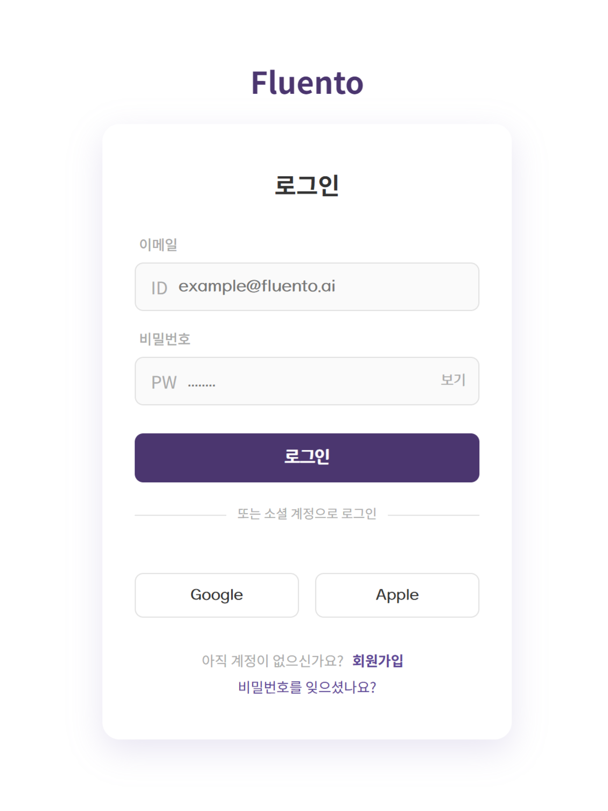
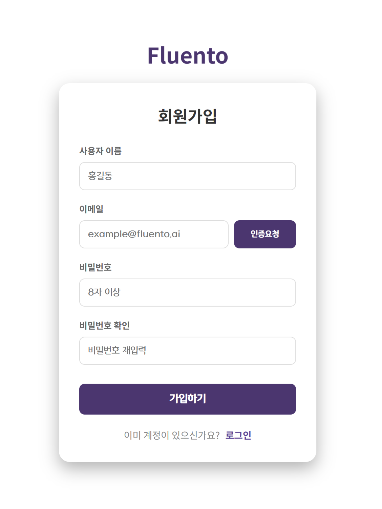
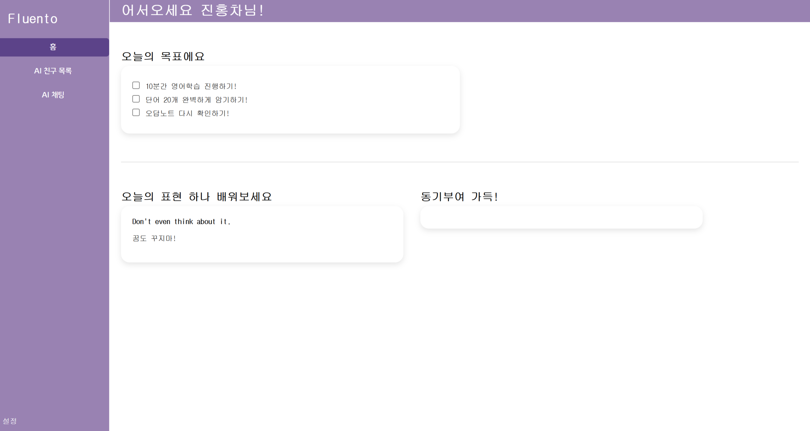
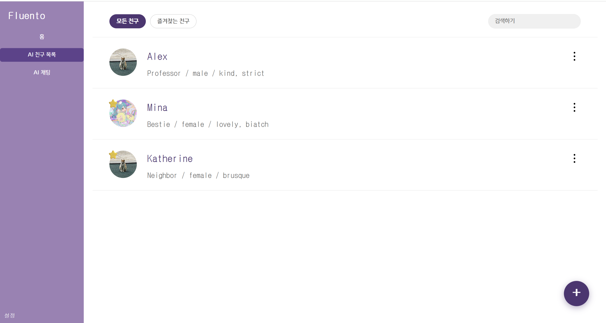
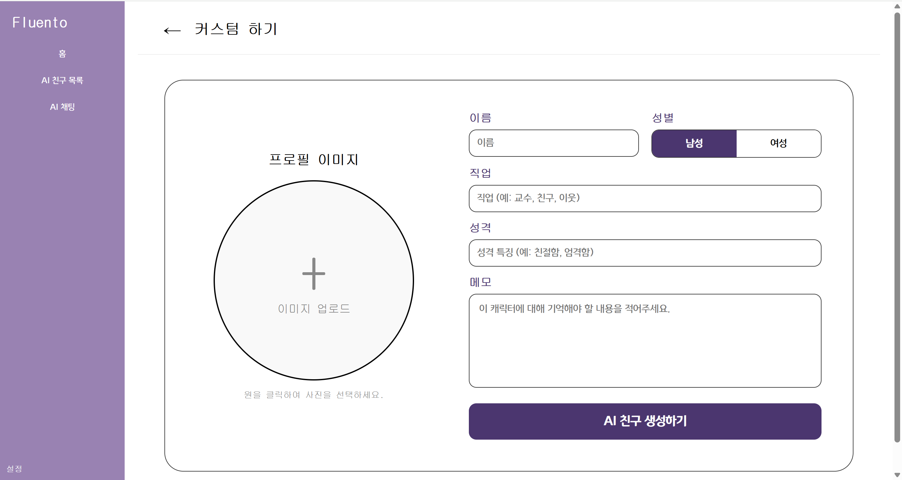
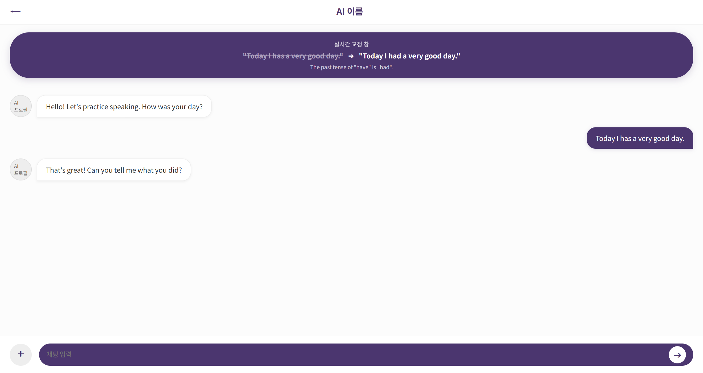

본 논문은 대규모 언어 모델(LLM)을 활용하여 학습자의 영어 수준을 실시간으로 분석하고, 난이도를 자동으로 조절하는 적응형 영어 회화 학습 시스템 Fluento의 설계와 구현을 다룬다. 기존 영어 학습 앱은 정적인 수준 분류와 단방향 콘텐츠 제공 방식에 머물러 학습자의 실력 변화에 즉각적으로 반응하지 못하는 한계가 있다. 본 시스템은 AWS Bedrock의 Claude 3.5 Sonnet 모델을 통해 대화 메시지마다 어휘, 문법, 유창성, 문맥 인식 능력을 분석하고, 규칙 기반 난이도 조절 알고리즘과 결합하여 학습자에게 최적의 대화 경험을 제공한다. Server-Sent Events(SSE)를 이용한 스트리밍 응답, AWS Cognito 기반 인증, Redis를 활용한 점수 캐싱으로 실시간성과 확장성을 동시에 확보하였다. 프론트엔드는 React 19 기반의 직관적 UI로 사용자가 AI 캐릭터와 자연스러운 대화를 나누며 즉각적인 문법 피드백을 받을 수 있도록 설계하였다.
세계화가 가속화됨에 따라 영어 의사소통 능력에 대한 수요는 지속적으로 증가하고 있다. 그러나 전통적인 영어 교육 방식은 강사 의존적이며, 개인의 수준과 학습 속도를 반영하기 어렵다. 기존 상용 영어 학습 앱들은 사전 정의된 커리큘럼에 따라 콘텐츠를 제공하기 때문에 학습자가 이미 알고 있는 내용을 반복하거나 지나치게 어려운 내용에 노출되는 문제가 발생한다.
대면 학습은 시간과 장소의 제약이 있고, 기존 온라인 학습 플랫폼은 단순한 문제 풀이에 그치는 경우가 많다. 최근 GPT, Claude 등 대규모 언어 모델의 등장으로 자연어 처리 기술이 급격히 발전하였고, 이를 영어 회화 교육에 접목하려는 시도가 증가하고 있으나, 대부분의 연구는 단순 챗봇 수준의 대화 제공에 그치며 학습자의 언어 수준을 동적으로 감지하고 난이도를 실시간으로 조절하는 적응형 학습 시스템은 아직 연구 단계에 머물러 있다.
본 연구의 목적은 다음과 같다.
본 논문은 2장에서 관련 연구를 검토하고, 3장에서 시스템 아키텍처 및 기술 스택을 설명한다. 4장에서는 프론트엔드 주요 페이지의 기능과 설계를 기술하며, 5장에서는 백엔드 핵심 기능의 구현 방법을 설명한다. 6장에서 보안 및 신뢰성, 7장에서 UI/UX 설계 특징을 다루고, 8장에서 결론 및 향후 연구 방향을 제시한다.
적응형 학습 시스템은 학습자의 반응을 분석하여 학습 경로나 콘텐츠를 동적으로 조정하는 시스템이다. Knewton, Duolingo 등 상용 서비스는 문항 반응 이론(IRT)이나 지식 추적(Knowledge Tracing) 기법을 활용하나, 자유 형식의 회화 데이터를 실시간으로 분석하는 데는 한계가 있다.
대규모 언어 모델을 언어 교육에 활용한 연구는 최근 급증하고 있다. GPT-4를 활용한 에세이 첨삭 연구, 챗봇 기반 회화 연습 시스템 등이 있으나, 다음과 같은 한계가 있다.
본 연구는 이러한 한계를 극복하기 위해 수준 판별·난이도 조절·피드백을 단일 대화 흐름 안에서 통합 처리한다.
Fluento 백엔드는 RESTful API 서버와 SSE 스트리밍 서버를 통합한 단일 Spring Boot 애플리케이션으로 구성된다. 클라이언트는 메시지 전송 후 반환된 스트림 URL로 SSE 연결을 맺어 AI 응답을 실시간으로 수신한다.
| 분류 | 기술 | 버전 |
|---|---|---|
| Frontend Framework | React | 19.2.4 |
| Routing | React Router DOM | 7.13.2 |
| Build Tool | Vite | 8.0.1 |
| Module System | ES Module | — |
| State Management | React Hooks | — |
| 분류 | 기술 | 버전 | 선택 이유 |
|---|---|---|---|
| Language | Java (JDK) | 17 | 안정성, 생태계 |
| Framework | Spring Boot | 4.0.0 | 최신 LTS, 반응형 지원 |
| Reactive | Spring WebFlux | Spring 관리 | 비동기 SSE 스트리밍 |
| Database | PostgreSQL | 17 | JSONB 지원, 오픈소스 |
| Cache | Redis | 7 | 인메모리 점수 추적 |
| ORM | Spring Data JPA | Spring 관리 | 생산성 |
| DB 마이그레이션 | Flyway | Spring 관리 | 스키마 버전 관리 |
| 인증 | AWS Cognito | SDK v2 2.30.19 | OAuth 2.0 / JWT |
| AI | AWS Bedrock (Claude 3.5 Sonnet) | SDK v2 2.30.19 | 고성능 LLM, 스트리밍 |
| Build | Gradle | 9.0.0 | 빠른 빌드, 의존성 관리 |
| 컨테이너 | Docker / Docker Compose | — | 환경 일관성 |
| 테이블 | 역할 |
|---|---|
users | 사용자 계정 (Cognito Sub 매핑) |
chat_rooms | 채팅방 (현재 수준, 캐릭터 정보) |
chat_messages | 메시지 (수준, 평가 점수, 피드백 JSONB) |
level_assessments | 수준 판별 이력 (신뢰도, 지표) |
com.fluento
├── config/ # 보안, Redis, Jackson, Swagger 설정
├── controller/ # REST 및 SSE 컨트롤러
├── domain/ # JPA 엔티티 및 Repository
├── dto/ # 요청·응답 DTO
├── exception/ # 전역 예외 처리
└── service/
├── BedrockService # AWS Bedrock API 호출 (동기·비동기)
├── AIResponseService # SSE 스트림 전체 흐름 통합
├── LevelAssessmentService # 수준 판별
├── LevelAdjustmentService # 난이도 조절 (Redis 기반)
└── EvaluationService # 문법·뉘앙스 평가로그인 페이지는 기존 사용자의 접근을 관리하고, 개인 학습 데이터를 보호하는 첫 번째 보안 관문이다. 사용자는 이메일 주소와 비밀번호를 입력하여 시스템에 접근한다.
화면 상단에는 Fluento 로고가 배치되어 브랜드 아이덴티티를 강조한다. 중앙의 하얀색 카드 형태 로그인 영역에는 두 개의 입력 필드가 있다. 첫 번째는 이메일 입력창으로 사용자의 고유 식별자 역할을 하고, 두 번째는 비밀번호 입력창으로 입력한 문자를 보호하기 위해 기본적으로 점(●) 형태로 표시된다.
비밀번호 필드의 우측에는 "보기/숨김" 토글 버튼이 위치한다. 이 버튼을 클릭하면 비밀번호를 일시적으로 일반 텍스트로 표시하여 사용자가 입력 오류를 확인할 수 있도록 했다. 로그인 버튼은 보라색(#4E3473)으로 강조되어 주요 행동을 유도하며, 로그인 완료 시 사용자의 이메일 정보가 로컬 저장소에 임시 저장된다.
하단에는 "또는 소셜 계정으로 로그인" 옵션이 제공되며, Google과 Apple 계정을 통한 빠른 로그인 기능도 준비되어 있다. 페이지 하단의 링크를 통해 신규 사용자는 회원가입 페이지로, 기존 사용자는 비밀번호 찾기 기능으로 이동할 수 있다.

회원가입 페이지는 신규 사용자가 안전하게 계정을 생성하는 과정을 관리한다. 사용자 정보의 정확성과 보안을 동시에 보장하도록 단계적 입력 구조로 구성되어 있다.
두 번째 단계는 이메일 인증 절차로, 이메일 주소 입력 후 "인증요청" 버튼을 클릭하면 6자리 인증번호를 발송한다. 인증번호 하단에는 유효 시간(03:00)을 표시하여 사용자에게 시간 제약을 명확히 알리며, 이 타이머는 무차별 대입 공격으로부터 계정을 보호한다.
세 번째와 네 번째 단계는 비밀번호 설정이다. 두 입력값이 일치하지 않으면 경고 메시지가 표시되어 사용자 실수를 방지한다. 모든 필드가 올바르게 입력되면 "가입하기" 버튼이 활성화되며, 가입 완료 후 자동으로 로그인 페이지로 이동한다.

홈 페이지는 사용자의 일일 학습 목표를 관리하고 학습 동기를 부여하는 대시보드 역할을 한다. 화면 상단에는 "오늘의 목표에요"라는 제목이 있고, 그 아래 체크박스 형태의 목표 목록이 나열된다. 기본 목표는 "10분간 영어학습 진행하기!", "단어 20개 완벽하게 암기하기!", "오답노트 다시 확인하기!" 등으로 구성된다.
각 목표 옆의 체크박스를 클릭하면 해당 항목이 완료된 것으로 표시된다. 완료된 항목은 회색으로 변하고 텍스트에 취소선이 나타나 시각적 피드백을 제공하며, 이는 사용자의 성취감을 높이고 학습 지속력을 강화한다.
페이지 중단부에는 "오늘의 표현 하나 배워보세요" 섹션에 일일 영어 표현과 해석이 제시된다. 우측에는 "동기부여 가득!" 섹션이 배치되어 있으며, 향후 AI가 생성한 격려 메시지나 학습 통계를 추가할 계획이다.

친구 목록 페이지는 사용자가 생성한 AI 캐릭터를 관리하고 선택하는 중추 기능이다. 페이지 상단에는 "모든 친구"와 "즐겨찾는 친구" 두 개의 탭 버튼이 있으며, 탭 선택 상태는 버튼의 색상 변화(보라색 강조)로 시각적으로 표시된다. 상단 우측에는 실시간 검색 입력 창이 위치한다.
각 친구는 카드 형태로 표시된다. 좌측에는 친구의 프로필 이미지(원형)가 있고, 즐겨찾기 친구인 경우 별(⭐) 아이콘이 표시된다. 프로필 우측에는 친구의 이름과 설명이 나열되며, 항목 우측 끝의 세로 점(⋮) 아이콘을 클릭하면 "즐겨찾기 등록/해제", "친구 삭제" 옵션을 제공한다.
친구 항목을 클릭하면 전체 화면을 덮는 모달 창이 나타난다. 모달 상단에는 친구의 프로필 이미지(200×200px)가 크게 표시되고, 하단에는 해당 친구에 대한 메모를 작성할 수 있는 텍스트 입력 영역이 제공된다.
페이지 우측 하단에는 원형의 보라색 플로팅 버튼("+")이 고정되어 있으며, 클릭 시 새로운 AI 친구를 생성하는 커스텀 친구 페이지로 이동한다.

커스텀 친구 페이지는 사용자가 자신이 원하는 AI 캐릭터를 직접 생성하는 창작 공간이다. 메인 콘텐츠는 좌우 두 섹션으로 나뉜다. 좌측에는 프로필 이미지 업로드 영역이 있으며, 원형 영역을 클릭하면 파일 탐색기가 열려 이미지를 선택할 수 있다.
우측 섹션에는 이름, 성별(남성/여성 버튼), 직업(교수·친구·이웃 등), 성격(친절함·엄격함 등), 메모 입력 필드가 배열되어 있다. 이름과 직업이 입력되지 않으면 경고 메시지가 표시되며, 모든 필드가 올바르게 입력되면 친구가 생성되고 자동으로 친구 목록 페이지로 이동한다.

채팅 페이지는 사용자와 AI 캐릭터 간의 영어 대화를 실현하는 핵심 기능이다. 자연스러운 대화 환경과 함께 실시간 문법 교정을 제공하여 학습 효과를 극대화한다.
헤더 아래에는 보라색으로 강조된 "실시간 교정 창"이 배치되어 있다. 이 영역은 사용자가 입력한 영어 문장의 문법 오류를 즉시 표시한다.
원본 문장은 취소선으로 표시되어 오류임을 시각적으로 표현하고, 수정된 문장은 강조되어 올바른 표현을 명확히 한다.
교정 창 아래는 메시지가 누적되는 채팅 영역으로, 항상 최신 메시지가 화면 하단에 보이도록 자동 스크롤된다. 사용자 메시지는 화면 우측에 보라색 말풍선으로, AI 메시지는 화면 좌측에 흰색 말풍선으로 표시된다. 페이지 하단에는 보라색 입력 바와 전송 버튼(화살표 아이콘)이 배치되어 있다.

사용자가 메시지를 전송할 때마다 LevelAssessmentService가 해당 메시지를 AWS Bedrock의 Claude 3.5 Sonnet 모델에 전달하여 영어 수준을 판별한다. 분석 항목은 어휘(vocabulary), 문법(grammar), 유창성(fluency), 문맥 인식(contextAwareness)의 4가지이며, 각 항목은 beginner / intermediate / advanced로 분류된다.
프롬프트 설계는 모델이 JSON 형식으로만 응답하도록 지시하여 파싱 오류를 최소화하였다.
LevelAdjustmentService는 Redis List(fluento:scores:{roomId})에 저장된 최근 평가 점수를 기반으로 다음 규칙에 따라 난이도를 조절한다.
| 조건 | 조치 |
|---|---|
| 연속 3개 메시지 점수 ≥ 90 | 수준 상향 |
| 연속 2개 메시지 점수 ≤ 50 | 수준 하향 |
| 그 외 | 현재 수준 유지 |
Redis를 사용하여 DB 조회 없이 O(1) 속도로 최근 점수를 조회하고, 수준 변경 시 chat_rooms 테이블의 current_level 컬럼을 갱신한다.
BedrockService는 현재 학습자 수준에 따라 서로 다른 시스템 프롬프트를 AWS Bedrock에 전달한다.
| 수준 | 시스템 프롬프트 특징 |
|---|---|
| Beginner | 가장 빈번한 1,000~2,000개 어휘, 5~10 단어 단문, 현재 시제만 사용 |
| Intermediate | 3,000~5,000개 어휘, 10~20 단어 문장, 다양한 시제, 일반 관용어 포함 |
| Advanced | 5,000개 이상 어휘, 복문·가정법·학문적 표현, 문화적 참조 포함 |
응답은 AWS SDK의 ConverseStreamRequest를 통해 스트리밍으로 수신하며, Flux<String> 형태로 리액티브 파이프라인에 통합된다.
Spring WebFlux의 Flux<ServerSentEvent<>>를 활용하여 비동기 스트리밍을 구현하였다. AIResponseService는 다음 순서로 이벤트를 발행한다.
ai_start — 즉시 발행 (사용자 대기 시간 최소화)level_assessment — Bedrock 수준 판별 완료 후 발행level_adjustment — 난이도 변경이 발생한 경우에만 발행ai_chunk × N — Bedrock 스트리밍 응답 청크를 그대로 전달ai_complete — 전체 AI 메시지 저장 완료 후 발행
문법·뉘앙스 평가는 ai_complete 발행 이후 별도 스레드(Schedulers.boundedElastic())에서 비동기 실행되므로 SSE 스트림의 응답 시간에 영향을 주지 않는다.
EvaluationService는 대화가 완료된 후 사용자 메시지와 AI 응답을 함께 Bedrock에 전달하여 다음 항목을 평가한다.
평가 결과는 chat_messages 테이블의 JSONB 컬럼에 저장되어, 클라이언트가 메시지 조회 시 피드백을 함께 확인할 수 있다.
운영 환경에서는 AWS Cognito가 발급한 JWT를 Spring Security OAuth2 Resource Server가 검증한다. 개발 환경(dev 프로필)에서는 DevSecurityConfig가 활성화되어 Authorization: Bearer dev-token 헤더로 인증을 우회할 수 있다. 이를 통해 개발 편의성과 운영 보안을 분리하였다.
모든 응답은 통일된 래퍼 포맷을 사용한다.
| Method | Path | 설명 |
|---|---|---|
| GET | /api/v1/health | 헬스체크 |
| POST | /api/v1/auth/register | 회원가입 |
| GET | /api/v1/users/me | 내 정보 조회 |
| PUT | /api/v1/users/profile | 프로필 수정 |
| GET | /api/v1/chat/rooms | 채팅방 목록 조회 |
| POST | /api/v1/chat/rooms | 채팅방 생성 |
| POST | /api/v1/chat/rooms/{roomId}/messages | 메시지 전송 |
| GET | /api/v1/chat/rooms/{roomId}/messages | 메시지 목록 조회 |
| GET | /api/v1/chat/stream?messageId= | SSE AI 응답 스트림 |
| GET | /api/v1/chat/rooms/{roomId}/level | 현재 수준 조회 |
본 플랫폼은 사용자 정보 보호와 신뢰 구축을 최우선으로 한다.
다단계 인증 절차
비밀번호 보안
본 시스템은 학습자에게 다음과 같은 가치를 제공한다.
본 연구는 과학기술정보통신부 및 정보통신기획평가원의 SW중심대학지원사업의 연구결과로 수행되었습니다.